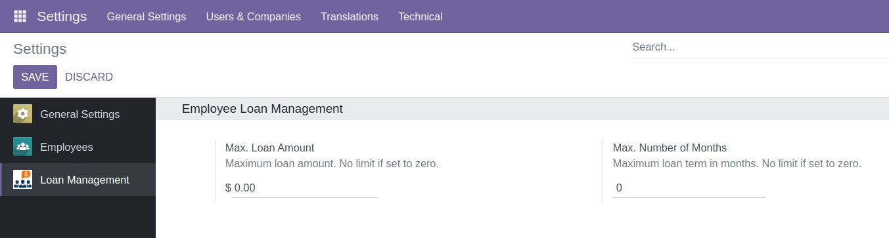
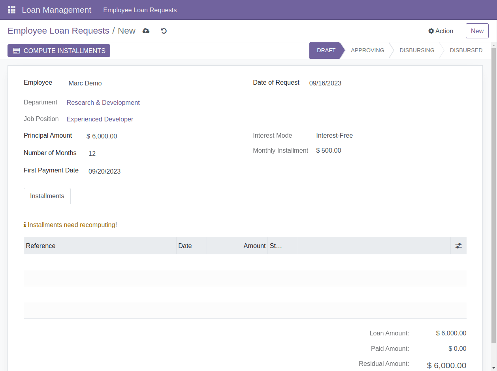
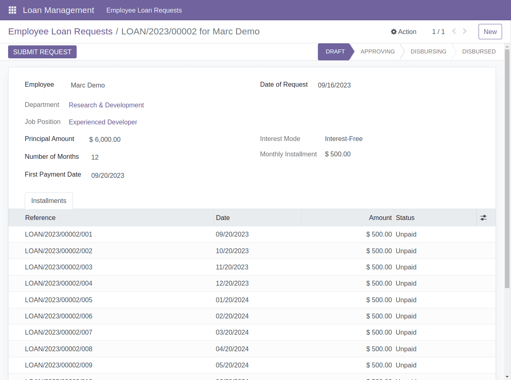
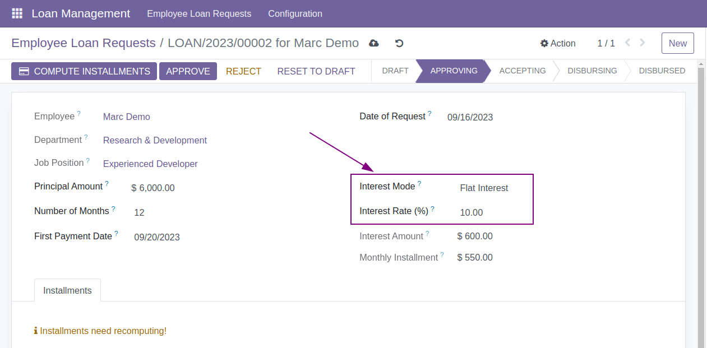

Upon installing this module, the administrator gains the ability
to configure maximum loan amounts and maximum loan terms in months
for employee loans.

Access to this module is categorized into three levels:
- Employee: Grants the ability to request loans.
- Officer: Allows validation and approval of loan requests.
- Administrator: Provides full control and configuration privileges.
To request a loan, an employee must input the principal amount,
the desired loan term in months, and the planned date of the first payment.
Before submitting request employee should compute monthly installments.

The system computes the monthly installments after clicking the "Compute Installments" button.

Loan module officers have the authority to approve or reject loan requests.
Before approval, officers can update the initial request data.
If any changes are made, the initiating employee is required to accept the modifications.
By default, the "Interest-Free" mode is applied,
but officers can change it to "Flat Interest" and set the interest rate.
Any alterations affecting the monthly installment trigger a recalculation.

Furthermore, loan module officers can initiate loan requests on behalf of other employees.
In such cases, the respective employee must accept the request after it has been approved.
There are three available workflows:
-
Employee initiates a loan request =>
Module officer approves =>
Loan proceeds to the Disbursing stage =>
Officer marks installments as paid =>
Disbursed.
-
Employee initiates a loan request =>
Module officer makes changes and approves =>
Employee accepts changes =>
Loan proceeds to the Disbursing stage =>
Officer marks installments as paid =>
Disbursed.
-
Module officer initiates a loan request on behalf of another employee =>
Module officer approves =>
Employee accepts changes =>
Loan proceeds to the Disbursing stage =>
Officer marks installments as paid =>
Disbursed.
Each stage includes a "Reject" button,
enabling officers reject a request or employees to reject a request
if they disagree with the changes made by officers.
Dynamic Approval Workflows for Employee Loans
For more extensive approval workflows with unlimited stages and
various conditions, consider our
Dynamic Approval Workflows for Employee Loans
module.
The Loan Management module provides essential functionality for
requesting and approving employee loans, allowing manual marking
of installments as paid or unpaid without affecting accounting entries.
XF Payroll Integration
Our Loan Management Module can be seamlessly integrated with the
Payroll Deductions Module
,
ensuring that approved loans are automatically deducted from employees' salaries,
simplifying payroll processes and ensuring accurate loan repayment tracking.
Accounting Integration
If you require automated accounting entries for loans and
their installments, please refer to our
Employee Loan Management (Accounting)
and
Payroll Loan Deductions (Accounting)
modules.